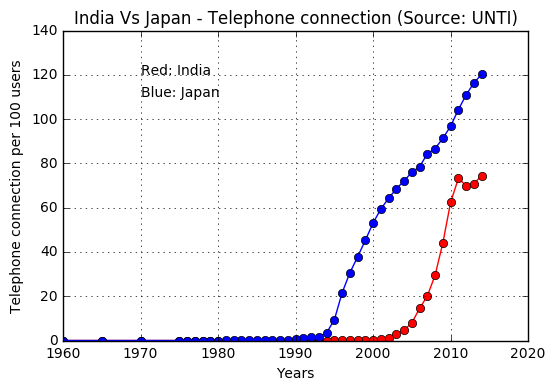
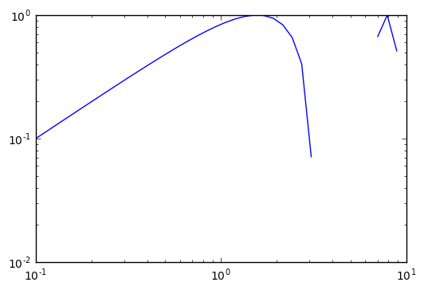
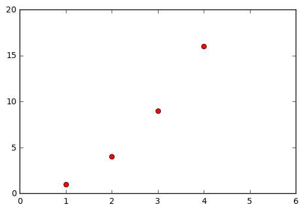
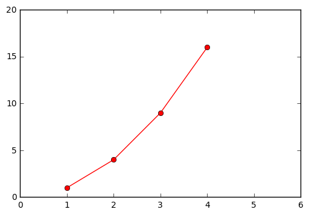

Jupyter QtConsole 4.2.1
Python 3.5.2 |Anaconda 4.2.0 (64-bit)| (default, Jul 5 2016, 11:41:13) [MSC v.1900 64 bit (AMD64)]
Type "copyright", "credits" or "license" for more information.
IPython 5.1.0 -- An enhanced Interactive Python.
? -> Introduction and overview of IPython's features.
%quickref -> Quick reference.
help -> Python's own help system.
object? -> Details about 'object', use 'object??' for extra details.
In [1]: clear
In [2]: cd r"C:\Users\azazel\Documents\C.A.R.T\Data Analysis Using Python\Winter_Workshop_2016_Questions\Telecommunications (India_Vs_Japan)"
[WinError 123] The filename, directory name, or volume label syntax is incorrect: 'r"C:\\Users\\azazel\\Documents\\C.A.R.T\\Data Analysis Using Python\\Winter_Workshop_2016_Questions\\Telecommunications (India_Vs_Japan)'
C:\Users\azazel\Documents
In [3]: cd "C:\Users\azazel\Documents\C.A.R.T\Data Analysis Using Python\Winter_Workshop_2016_Questions\Telecommunications (India_Vs_Japan)"
C:\Users\azazel\Documents\C.A.R.T\Data Analysis Using Python\Winter_Workshop_2016_Questions\Telecommunications (India_Vs_Japan)
In [4]: clear
In [5]: pwd
Out[5]: 'C:\\Users\\azazel\\Documents\\C.A.R.T\\Data Analysis Using Python\\Winter_Workshop_2016_Questions\\Telecommunications (India_Vs_Japan)'
In [6]: ls
Volume in drive C has no label.
Volume Serial Number is EEF3-9911
Directory of C:\Users\azazel\Documents\C.A.R.T\Data Analysis Using Python\Winter_Workshop_2016_Questions\Telecommunications (India_Vs_Japan)
01/25/2017 03:07 PM <DIR> .
01/25/2017 03:07 PM <DIR> ..
01/25/2017 03:07 PM <DIR> __pycache__
10/16/2016 01:10 AM 286 Assignmet.txt
10/19/2016 08:10 PM 804 line_graph.py
10/15/2016 03:22 AM 1,352 UNdata_Export_20161014_133208618.csv
10/15/2016 03:22 AM 1,565 UNdata_Export_20161014_133529940.csv
4 File(s) 4,007 bytes
3 Dir(s) 218,142,035,968 bytes free
In [7]: line_graph.py
---------------------------------------------------------------------------
NameError Traceback (most recent call last)
<ipython-input-7-0f2b23389f4f> in <module>()
----> 1 line_graph.py
NameError: name 'line_graph' is not defined
In [8]: celar
---------------------------------------------------------------------------
NameError Traceback (most recent call last)
<ipython-input-8-998df9a00283> in <module>()
----> 1 celar
NameError: name 'celar' is not defined
In [9]: clear
In [10]: import matplotlib.pyplot as plt
...: import pandas as pd
...: ind = pd.read_csv("UNdata_Export_20161014_133208618.csv")
...: jap = pd.read_csv("UNdata_Export_20161014_133529940.csv")
...:
...: def get_x(lst):
...: usr = lst
...: users = []
...: for a in usr:
...: users.append(a)
...: return users
...:
...: def get_y(lst):
...: year = lst
...: yr = []
...: for a in year:
...: yr.append(a)
...: return yr
...:
...: yaxis_india = get_x(ind['Value'])
...: xaxis_india = get_y(ind['Year'])
...:
...: yaxis_jap = get_x(jap['Value'])
...: xaxis_jap = get_y(jap['Year'])
...:
...:
...: plt.plot(xaxis_india, yaxis_india, 'ro-', xaxis_jap, yaxis_jap, 'bo-')
...: plt.xlabel("Years")
...: plt.ylabel("Telephone connection per 100 users")
...: plt.title('India Vs Japan - Telephone connection (Source: UNTI)')
...: plt.grid(True)
...: plt.text(1970, 120, r'Red: India')
...: plt.text(1970, 110, r'Blue: Japan')
...: plt.show()
...:

In [11]: clear
In [12]: x = logspace(-1,1,40)
---------------------------------------------------------------------------
NameError Traceback (most recent call last)
<ipython-input-12-733a503091b0> in <module>()
----> 1 x = logspace(-1,1,40)
NameError: name 'logspace' is not defined
In [13]: import numpy as np
In [14]: x = np.logspace(-1,1,40)
In [15]: y = sin(x)
---------------------------------------------------------------------------
NameError Traceback (most recent call last)
<ipython-input-15-1fb2b69a9cfb> in <module>()
----> 1 y = sin(x)
NameError: name 'sin' is not defined
In [16]: y = np.sin(x)
In [17]: %matplotlib inline
In [18]: import matplotlib.pyplt as plt
---------------------------------------------------------------------------
ImportError Traceback (most recent call last)
<ipython-input-18-f75e94d8a42a> in <module>()
----> 1 import matplotlib.pyplt as plt
ImportError: No module named 'matplotlib.pyplt'
In [19]: import matplotlib.pyplot as plt
In [20]: plt.loglog(x,y)
Out[20]: [<matplotlib.lines.Line2D at 0x1b39b43a198>]

In [21]: import matplotlib.pyplot as plt
...: plt.plot([1,2,3,4], [1,4,9,16], 'ro')
...: plt.axis([0, 6, 0, 20])
...:
Out[21]: [0, 6, 0, 20]

In [22]: import matplotlib.pyplot as plt
...: plt.plot([1,2,3,4], [1,4,9,16], 'ro-')
...: plt.axis([0, 6, 0, 20])
...:
Out[22]: [0, 6, 0, 20]

In [23]: